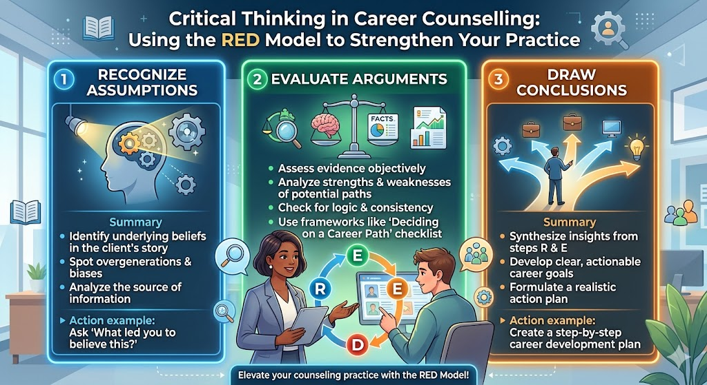

Critical Thinking in Career Counselling: Using the RED Model to Strengthen Your Practice

"Improve Your Critical Thinking With This" — YouTube (Part 2: Top Soft Skills for Professionals)
Prepared by: TIPS CGPS | For: Career Counsellors & Guidance Professionals
Critical thinking is one of the most cited soft skills in professional settings today — and yet, one of the least understood. As career counsellors, we ask students to think carefully about their futures. But do we apply the same rigour to our own reasoning: the assumptions we make about a student, the arguments we accept at face value, and the recommendations we offer? This note distils a structured framework you can both use in your practice and teach your students.
Section 1: What Is Critical Thinking?
Critical thinking is not just being sceptical or asking questions. It is being more careful, disciplined, and systematic in how you:
- Interpret information — what does this data actually say?
- Dissect arguments — are the reasons given sound?
- Make judgments — what conclusion is actually warranted here?
In professional settings, one of the most practical frameworks for this is the RED model, developed by Pearson Talent Lens, studied across academic journals for nearly two decades.
Recognise Assumptions | Evaluate Arguments | Draw Conclusions
Section 2: The Three Steps of the RED Model
2.1 R — Recognise Assumptions
The first step is to identify what is being taken for granted — including your own assumptions. Many people treat their assumptions as facts, even though those assumptions may never have been verified. In counselling, unexamined assumptions can quietly drive harmful advice.
Where this shows up in counselling:
- "This student isn't cut out for medicine." — Based on what evidence, exactly?
- "Parents from that background always push engineering." — Have you verified this with this family?
- "He doesn't seem motivated." — Or is he motivated about something you haven't asked about?
Questions to slow down and ask:
- What am I assuming here — about the student, the family, or the career path?
- Has this assumption been tested against actual data or interaction?
- What might I be missing that I haven't considered?
When did you last stop and ask yourself, "What assumption am I making about this student — and is it actually true?"
2.2 E — Evaluate Arguments
Once assumptions are visible, the next step is to evaluate the reasoning. An argument is simply a claim supported by reasons and evidence. Good counsellors — like good critical thinkers — listen carefully for the quality of reasoning, not just the confidence of the speaker.
Four things to evaluate in any argument:
| Dimension | The Question to Ask |
|---|---|
| Clarity | Is the claim clearly stated, or is it vague? |
| Quality of evidence | Is the data credible and relevant, or just an anecdote? |
| Logic | Do the conclusions naturally follow from the evidence? |
| Potential bias | Is anything being selectively included, excluded, or interpreted? |
Counselling examples — where weak arguments appear:
- "Everyone from this college ends up unemployed." — Everyone? What's the actual data?
- "Data Science is the future." — Future for whom, in what timeline, with what entry requirements?
- "This student should do Commerce because he's weak in Science." — Is that logic or labelling?
Questions to gently probe weak arguments (without sounding aggressive):
- "What evidence supports that?"
- "Can we walk through the reasoning step by step?"
- "How strong is the data behind this recommendation?"
These questions can sound blunt in writing. In practice, soften them with a genuinely curious, supportive tone and composed body language. You want to come across as someone who wants to understand — not challenge.
When a student or parent presents a confident plan, do you usually accept it, or do you pause to examine the reasoning?
2.3 D — Draw Conclusions
This is where critical thinking becomes most visible. After examining the assumptions and evaluating the arguments, it is time to offer a clear, well-reasoned recommendation. A good critical thinker does not just say what to do — they explain the why, acknowledge what is uncertain, and offer a structured bottom-line.
The three-part framework for any recommendation:
- Here are the options: State what is being decided between.
- Here are the core tensions: Name the key tradeoff or competing priority.
- Here is my recommendation and why: Give a clear bottom-line with reasoning.
In counselling practice:
Instead of: "I think you should consider Humanities."
Try: "We have two realistic directions here — a Science stream that keeps engineering options open, or a Humanities stream that plays to your strengths in writing and research. The core tension is certainty now versus flexibility later. Based on what you've told me, I'd recommend Humanities, because your academic profile and interests align more strongly there, and the career paths you mentioned — journalism, law, research — are better served by that route."
Is your next student recommendation built on this structure? Can you clearly name the options, the core tension, and your reasoning?
Section 3: The RED Model at a Glance
| Step | What It Means | Career Counsellor Application |
|---|---|---|
| R | Recognise Assumptions | Pause before advising. Ask: what am I assuming about this student, this family, or this path? |
| E | Evaluate Arguments | When a student, parent, or colleague makes a claim, assess the evidence, logic, and potential bias behind it. |
| D | Draw Conclusions | Structure your recommendation clearly: options → tradeoffs → bottom-line with reasoning. |
Section 4: Why This Matters in Counselling
Career counselling is, at its core, a judgment-intensive profession. We help young people make decisions with long consequences, often under time pressure, with incomplete information, and competing influences from family, peers, and culture. Every session involves assumptions, arguments, and conclusions — the only question is whether they are examined or unexamined.
What critical thinking helps us avoid:
- Confirming what a parent wants to hear rather than what the evidence suggests
- Making career recommendations based on cultural stereotypes rather than individual data
- Accepting a student's stated preference without exploring whether it reflects genuine interest or external pressure
- Presenting recommendations with false certainty that doesn't acknowledge tradeoffs
What critical thinking helps us build:
- Greater trust — students and parents sense when reasoning is rigorous
- Better outcomes — recommendations are more likely to fit the actual person
- Professional credibility — you are seen as a strategic thinker, not just a form-filler
- A culture of reflection — you model the thinking you want students to develop
Section 5: Classroom Extension — Teaching This to Students
The RED model is not just a professional tool — it is an excellent thinking framework to introduce to students in Grades 9–12. Critical thinking is explicitly valued by university admissions teams, especially in Personal Statement reviews, interviews, and skills-based programmes.
Ways to introduce RED in CGPS sessions or classrooms:
- Give students a career-related claim: "AI will replace all jobs by 2030." Ask them to identify the assumptions, evaluate the evidence, and draw their own conclusion.
- Use university admissions decisions as live examples: "This student got into X university. What assumptions drove that outcome? What evidence supported the application?"
- During Subject Choices Day: ask students to structure their reasoning — options, tradeoffs, and bottom-line — instead of just stating what they want.
- Tie to Personal Statement writing: strong PS essays often follow the D step — clear position, reasoning, acknowledgment of alternatives.
Takeaway for Your Next Session
Before your next student meeting, ask yourself three questions:
- What assumptions am I already carrying into this session?
- When the student or parent makes a claim, will I accept it or examine it?
- Will my recommendation be structured: options, tradeoffs, and clear reasoning?
Critical thinking is not a technique reserved for boardrooms. It is the foundation of responsible career guidance.
Reference: "Improve Your Critical Thinking With This" — YouTube | Part 2: Top Soft Skills for Professionals